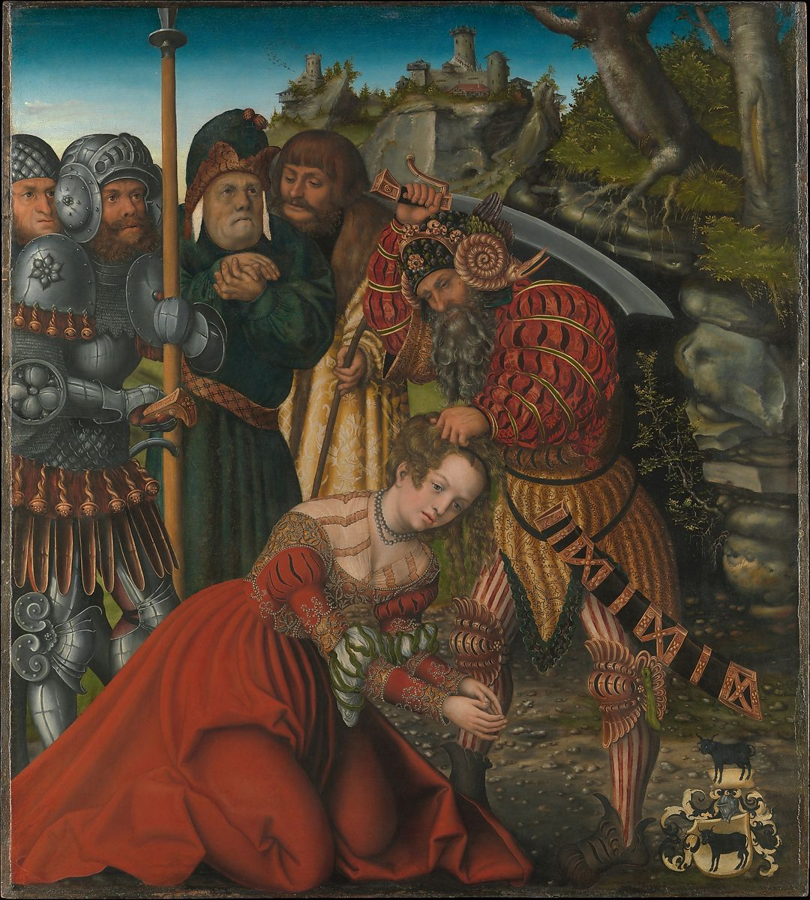

<head>
<meta charset="UTF-8" />
<meta name="keywords" content="drawing, painting" />
<meta name="description" content="drawings by Sunjy" />
<title>Sunjy</title>
<link rel="shortcut icon" type="image/x-icon" href="../../mImages/mCommon/favicon.ico" media="screen" />
<link rel="stylesheet" type="text/css" href="../../mCsses/mCommon/mCssA.css" />
<link rel="stylesheet" type="text/css" href="../../mCsses/mCommon/mCssB.css" />
<link rel="stylesheet" type="text/css" href="../../mCsses/mCommon/mCssC.css" />
<link rel="stylesheet" type="text/css" href="../../mCsses/mCommon/mCssD.css" />
<link rel="stylesheet" type="text/css" href="../../mCsses/mContent/mCssA.css" />
<link rel="stylesheet" type="text/css" href="../../mCsses/mContent/mCssB.css" />
<link rel="stylesheet" type="text/css" href="../../mCsses/mContent/mCssC.css" />
<link rel="stylesheet" type="text/css" href="../../mCsses/mContent/mCssD.css" />
</head>
<script type="text/javascript" src="../../mScripts/mContent/mContentAA.js" /></script>
<script type="text/javascript" src="../../mScripts/mContent/mContentAB.js" /></script>
<script type="text/javascript" src="../../mScripts/mContent/mContentAC.js" /></script>
<script type="text/javascript" src="../../mScripts/mContent/mContentAD.js" /></script>
<script type="text/javascript"></script> 
<script type="text/javascript">
document.write('<div class="mImgAbsolute"></div>');
/*
document.write('<p class="mFontSizeBColor" />From a white paper...</p>');
document.write('<table class="center"><tr><td>');
document.write('');
document.write('</td></tr></table>');
*/
</script>


<script type="text/javascript">
document.write('<p class="mFontSizeBColor" />The Martyrdom of Saint Barbara</p>');
document.write('<p class="mFontSizeSColor" />By Lucas Cranach the Elder, ca. 1510. According to legend, Saint Barbara was executed by her pagan father, Dioscorus, when she refused to recant her Christian faith. Luxuriously dressed, she seems here to calmly accept her fate as she kneels before Dioscorus, who raises his sword to behead her. The four sinister-looking witnesses may be the Roman authorities who had tortured her in an attempt to persuade her to sacrifice to pagan gods, and who later sentenced her to death. <br><br>The coat of arms indicates that Cranach painted this panel for a member of the Rem family, who were wealthy merchants in Augsburg.</p>');
document.write('<table class="center" /><tr><td>');
document.write('<br>The coat of arms indicates that Cranach painted this panel for a member of the Rem family, who were wealthy merchants in Augsburg." />');
document.write('</td></tr></table>');
</script>


